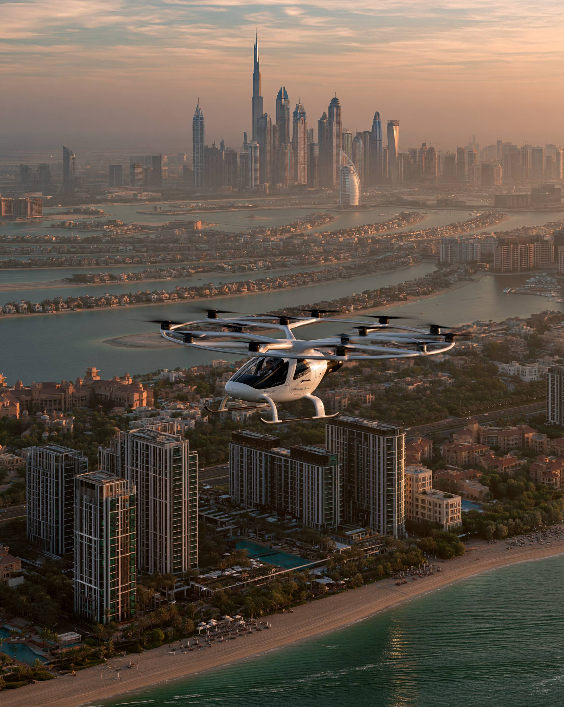

GCC • EXPATS • RELOCATION
The Gulf region continues attracting professionals, entrepreneurs, investors and families from around the world. But which city offers the best balance of opportunity, lifestyle and long-term growth?
Dubai remains the Gulf's leading international city. It offers world-class infrastructure, strong business opportunities, global connectivity and one of the most diverse expat communities anywhere in the world.
Best for entrepreneurs, professionals, investors and digital businesses.
Abu Dhabi combines economic strength with a calmer lifestyle. The city appeals to families, professionals and investors seeking stability, high-quality infrastructure and long-term opportunities.
Best for families, government-related careers and long-term relocation.
Doha offers modern infrastructure, strong public services and a growing economy. The city is increasingly attractive for professionals working in finance, energy, construction and technology.
Best for professionals seeking a balanced lifestyle and career growth.
Riyadh is experiencing one of the fastest transformations in the Middle East. Vision 2030 projects continue creating opportunities across technology, finance, construction and entrepreneurship.
Best for ambitious professionals, consultants and entrepreneurs targeting Saudi Arabia's rapidly expanding economy.
Muscat offers a slower pace of life, natural beauty and a welcoming environment. It remains one of the most comfortable cities in the GCC for families and professionals seeking work-life balance.
Best for families, educators and professionals seeking a relaxed lifestyle.
Kuwait City remains an important commercial center with opportunities in finance, energy and professional services. The city offers strong earning potential and an established expat population.
Best for professionals working in finance, energy and consulting.
Manama combines affordability, accessibility and a growing financial sector. Bahrain's open business environment continues attracting startups and international businesses.
Best for entrepreneurs, fintech professionals and startups.
Each GCC city offers a different experience. Dubai remains the regional leader, Riyadh is the fastest-growing opportunity, Abu Dhabi excels in quality of life, Doha offers balance, Muscat delivers lifestyle, Kuwait City provides strong earning potential and Manama remains startup-friendly.
The best city ultimately depends on your goals, career path, family needs and investment strategy.